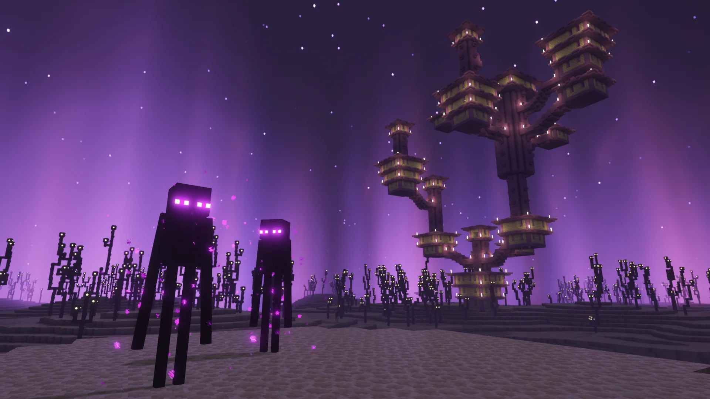
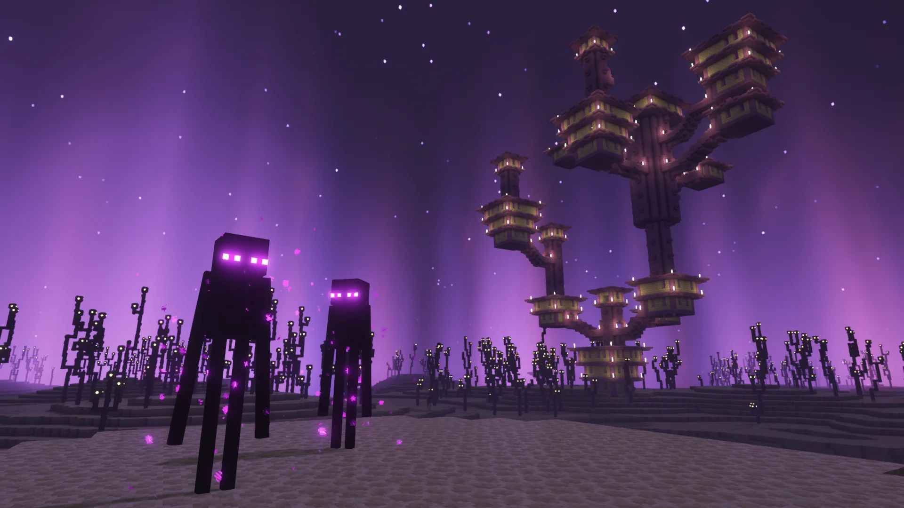

L'End
L'End est la dernière dimension de minecraft, d'où son nom assez explicite. Dans cette dimension vous trouverez le dernier boss du jeu, l'Ender dragon qui symbolise la fin du jeu lorsque vous le battez, il est entouré de différentes tours qui lui apporte de la régénération, il faut donc éliminer les tours en premier pour pouvoir ensuite le battre.
Caractéristiques de l'End
- L'Ender dragon : Ce dernier boss est tuable seulement après la destruction des tours qui l'entoure et qui lui permettent de se régénéré, une fois tué le jeu est officiellement terminé.
- Le vide : Dans cette dimension très oppressante, vous vous trouvez sur une grande île entouré par le vide. Il est donc très facile d'y mourir.
- Structures : Dans cette dimension il est aussi possible de retrouver des structures importantes. Après avoir tué le dragon il est possible d'explorer l'End en passant à travers une balise. Dans ces structures il y a très souvent des équipements très intéressant et notamment des ailes de dragon, ce qui va vous permettre de redécouvrir votre monde.
Galerie de l'End
 
